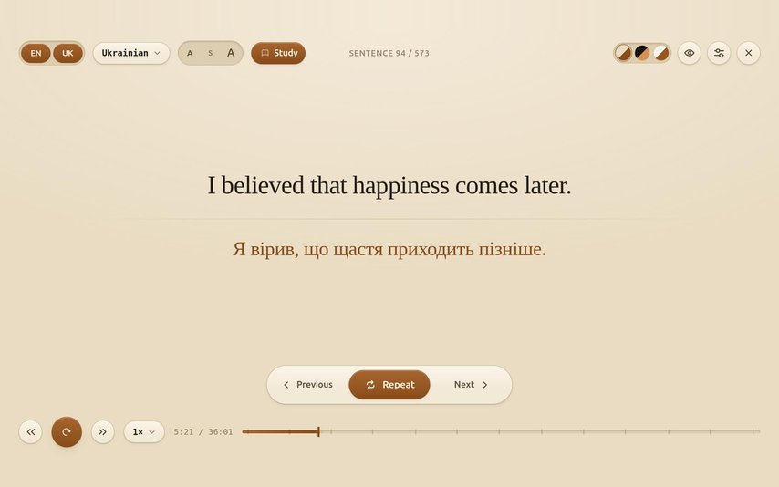
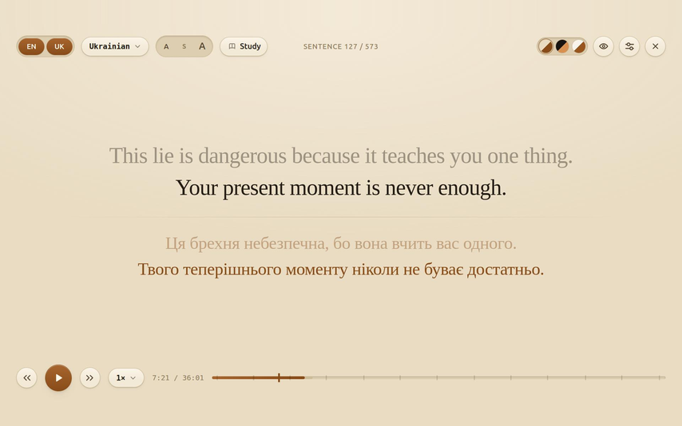
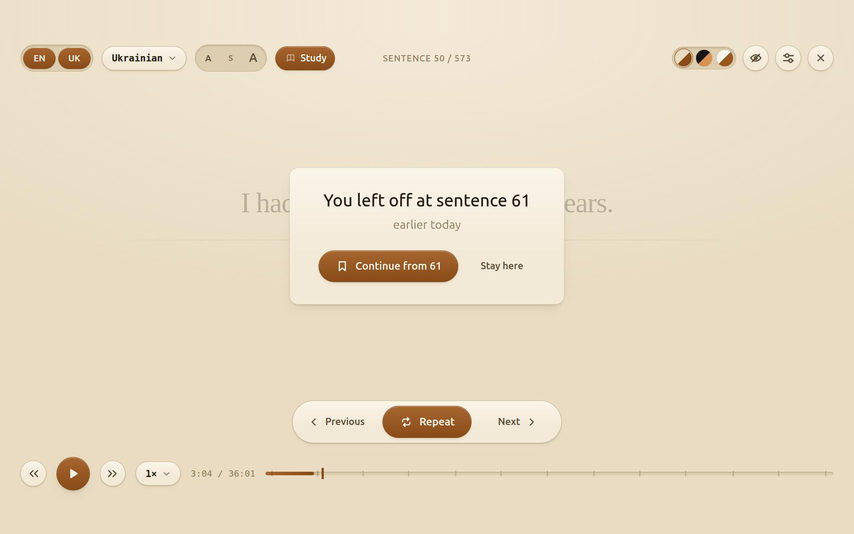

Two subtitle tracks at once on YouTube — the original above, its translation below — and the video stops at the end of every sentence, so you can repeat it out loud.
Watching a video with subtitles is not the same as practising a language. You read, you understand, the sentence is gone. Nothing sticks, because you never said anything out loud.
Study Subs is built around one technique — shadowing: repeating a sentence right after the speaker until it sounds natural. The awkward part of doing that by hand is the pausing: you hunt for the pause key, overshoot, scrub back, lose the sentence. Here the video stops by itself, exactly at the end of the sentence, and waits.

With Study off it is a plain reading overlay: the transcript rolls along with the video in two tiers, the previous line dimmed above the current one, and every line keeps its own translation underneath.

Come back to a video you were working through and it offers to continue from the sentence you left off at, and marks the spot on the scrubber.

With Study on: Space play / pause / replay, ← → previous and next sentence, R repeat, Esc exit. With Study off, Space and R go to YouTube's own player and ← → seek five seconds.
The original track is whatever the video has. The translation is YouTube's own auto-translate, and you can switch it mid-video to any of:
Be honest with yourself about the translation. It is machine translation — readable, not literary. It is there to unblock you when a sentence does not land, not to be studied as a text of its own. You can hide the translation row with one click when you want to try without it.
Nothing is collected and nothing leaves your computer — no accounts, no analytics, no trackers, no server of mine. Your settings, the subtitle cache and your bookmarks sit in the browser's local storage on your machine, and requests go only to youtube.com. The full policy spells out exactly what is stored, including the awkward part.
Everything goes to one place: GitHub Issues. Open an issue and it stays visible to the next person who wonders the same thing.
If something broke, the log helps more than a description: in the overlay open ⚙ → Advanced → Copy log and paste it into the issue. It says what the extension asked YouTube for and what came back.